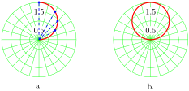

Example 10.17.
Graph the polar equation \(r=2\sin \theta\text{.}\)
Solution.
We make a table of values, choosing the special values for \(\theta\text{.}\) For each value of \(\theta\text{,}\) we evaluate \(r=2\sin \theta\text{.}\)
| \(\theta\) | \(0\) | \(\dfrac{\pi}{6}\) | \(\dfrac{\pi}{4}\) | \(\dfrac{\pi}{3}\) | \(\dfrac{\pi}{2}\) | \(\dfrac{2\pi}{3}\) | \(\dfrac{3\pi}{4}\) | \(\dfrac{5\pi}{6}\) | \(\pi\) |
| \(r\) | \(0\) | \(1\) | \(\sqrt{2}\) | \(\sqrt{3}\) | \(2\) | \(\sqrt{3}\) | \(\sqrt{2}\) | \(1\) | \(0\) |
First we'll plot the points in the first quadrant. Observe that as \(\theta\) increases from \(0\) to \(\dfrac{\pi}{2}\text{,}\) \(r\) increases from \(0\) to \(2\text{.}\) Starting at the pole, we connect the points in order of increasing \(\theta\text{.}\) Imagine a radial line sweeping around the graph through the first quadrant: as the angle increases, the length of the segment increases, so that its tip traces out the graph shown in figure (a).

Now continue plotting the points in the table as \(\theta\) increases from \(\dfrac{\pi}{2}\) to \(\pi\text{.}\) In the second quadrant, \(r\) decreases as \(\theta\) increases, as shown in figure (b). The graph we obtain is, in fact, a circle, which we will prove algebraically shortly. However, we have not yet plotted points for \(\theta\) between \(0\) and \(2\pi\text{.}\) Because \(\sin \theta\) is negative in the third and fourth quadrants, all the \(r\)-values for these angles are negative.
| \(\theta\) | \(\pi\) | \(\dfrac{7\pi}{6}\) | \(\dfrac{5\pi}{4}\) | \(\dfrac{4\pi}{3}\) | \(\dfrac{3\pi}{2}\) | \(\dfrac{5\pi}{3}\) | \(\dfrac{7\pi}{4}\) | \(\dfrac{11\pi}{6}\) | \(\pi\) |
| \(r\) | \(0\) | \(-1\) | \(-\sqrt{2}\) | \(-\sqrt{3}\) | \(-2\) | \(-\sqrt{3}\) | \(-\sqrt{2}\) | \(-1\) | \(0\) |
When we plot the points in this table, we see that the original graph is traced out again. For example, the point \(\left(\dfrac{7\pi}{6}, -1\right)\) is the same as the point \(\left(\dfrac{\pi}{6}, 1\right)\text{,}\) the point \(\left(\dfrac{5\pi}{4}, -\sqrt{2}\right)\) is the same as the point \(\left(\dfrac{\pi}{4}, \sqrt{2}\right)\text{,}\) and so on, around the circle. Thus, the graph of \(r=2\sin \theta\) is a circle, traced twice for \(0 \le \theta \le 2\pi\text{.}\)